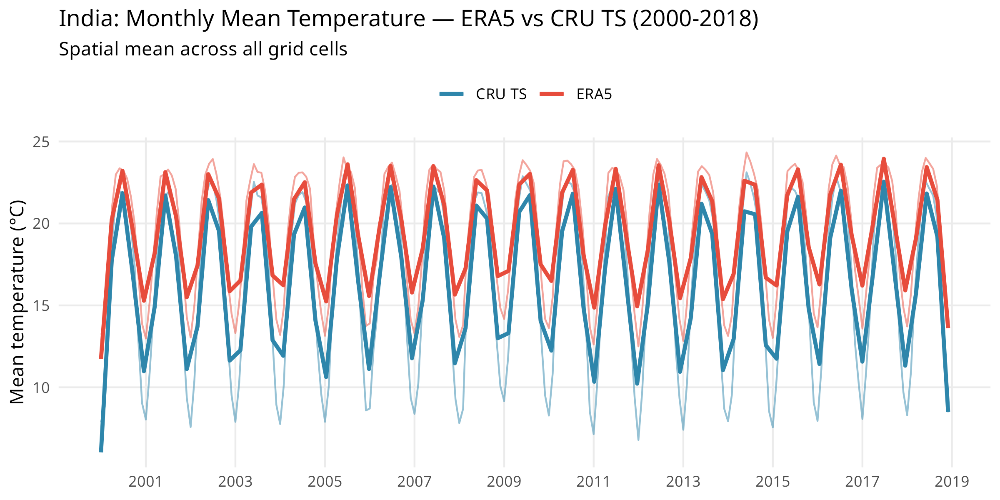
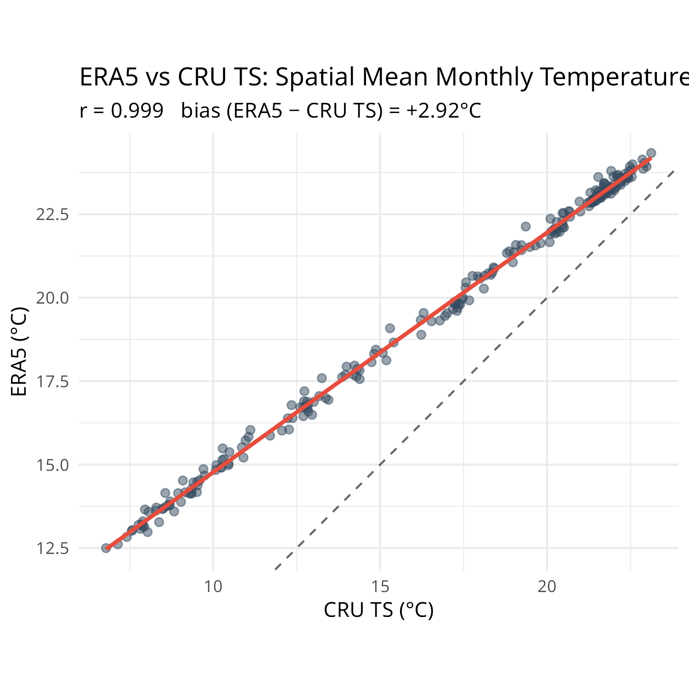
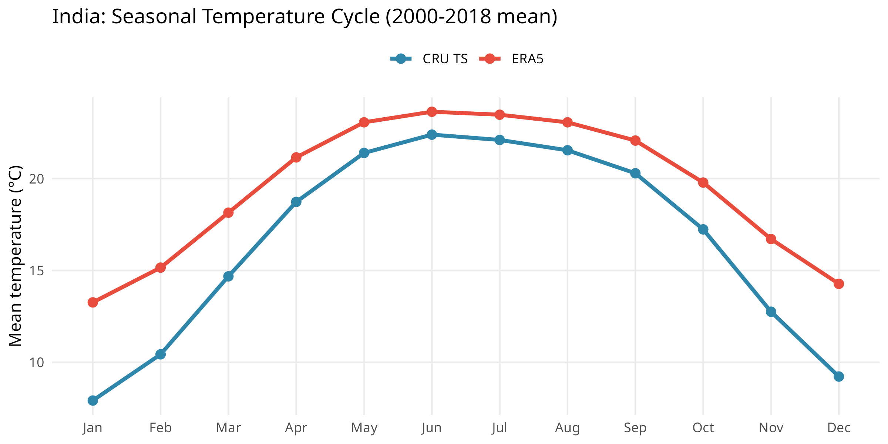
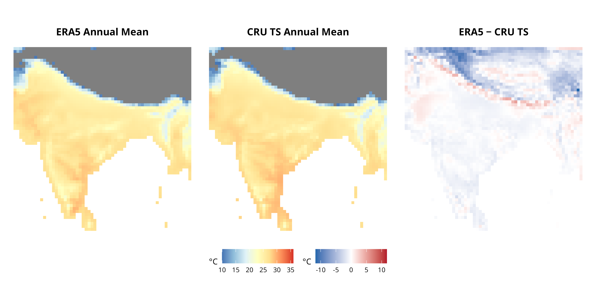
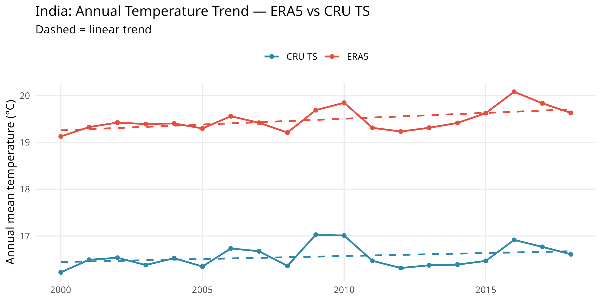

CRU TS vs ERA5: India Temperature Comparison (2000-2018)
Source:vignettes/cru-ts-comparison.Rmd
cru-ts-comparison.RmdWe can check how well ERA5 and CRU TS agree for monthly temperature over India. These are two independent records covering 2000-2018:
-
ERA5 - ECMWF reanalysis at 0.25°, pulled with
era5ify_bbox -
CRU TS v4.07 - station-interpolated observations
from UEA at 0.5°, pulled with
cru_ts_bbox
CRU TS variable dictionary with ERA5 equivalents:
list_cru_ts_variables() |>
select(variable, name, unit, era5_equivalent)
# variable name unit
# 1 tmp mean_temperature °C
# 2 tmx max_temperature °C
# 3 tmn min_temperature °C
# 4 dtr diurnal_temperature_range °C
# 5 pre precipitation mm/month
# 6 wet wet_day_frequency days/month
# 7 frs frost_day_frequency days/month
# 8 vap vapour_pressure hPa
# 9 cld cloud_cover %
# 10 pet potential_evapotranspiration mm/month
# era5_equivalent
# 1 2m_temperature
# 2 maximum_2m_temperature_since_previous_post_processing
# 3 minimum_2m_temperature_since_previous_post_processing
# 4 <NA>
# 5 total_precipitation
# 6 <NA>
# 7 <NA>
# 8 2m_dewpoint_temperature
# 9 total_cloud_cover
# 10 <NA>Download
# ERA5 monthly 2m_temperature for India
era5_tmp <- era5ify_bbox(
request_id = "india_era5_tmp_monthly",
variables = "2m_temperature",
start_date = "2000-01-01", end_date = "2018-12-31",
north = 37, south = 6, east = 98, west = 68,
frequency = "monthly", resolution = 0.5
)
# CRU TS monthly mean temperature for India
cru_tmp <- cru_ts_bbox(
variable = "tmp",
start_year = 2000, end_year = 2018,
north = 37, south = 6, east = 98, west = 68
)
saved <- readRDS(system.file("extdata", "india_era5_cru_comparison.rds",
package = "varunayan"
))
era5_tmp <- saved$era5_tmp
cru_tmp <- saved$cru_tmpMonthly time series
Spatial mean temperature across all India grid cells, month by month:
era5_monthly <- era5_tmp |>
group_by(year, month) |>
summarise(temp = mean(value, na.rm = TRUE), .groups = "drop") |>
mutate(source = "ERA5", date = as.Date(sprintf("%d-%02d-01", year, month)))
cru_monthly <- cru_tmp |>
group_by(year, month) |>
summarise(temp = mean(value, na.rm = TRUE), .groups = "drop") |>
mutate(source = "CRU TS", date = as.Date(sprintf("%d-%02d-01", year, month)))
temp_all <- bind_rows(era5_monthly, cru_monthly)
ggplot(temp_all, aes(x = date, y = temp, color = source)) +
geom_line(alpha = 0.5, linewidth = 0.5) +
geom_smooth(method = "loess", span = 0.07, se = FALSE, linewidth = 1.1) +
scale_x_date(date_breaks = "2 years", date_labels = "%Y") +
scale_color_manual(values = c("ERA5" = "#E74C3C", "CRU TS" = "#2E86AB")) +
labs(
x = NULL, y = "Mean temperature (\u00b0C)", color = NULL,
title = "India: Monthly Mean Temperature — ERA5 vs CRU TS (2000-2018)",
subtitle = "Spatial mean across all grid cells"
) +
theme_minimal(base_size = 11) +
theme(legend.position = "top", panel.grid.minor = element_blank())
Comparison
temp_wide <- inner_join(
era5_monthly |> select(year, month, ERA5 = temp),
cru_monthly |> select(year, month, `CRU TS` = temp),
by = c("year", "month")
)
cor_val <- cor(temp_wide$ERA5, temp_wide$`CRU TS`, use = "complete.obs")
bias <- mean(temp_wide$ERA5 - temp_wide$`CRU TS`, na.rm = TRUE)
ggplot(temp_wide, aes(x = `CRU TS`, y = ERA5)) +
geom_abline(slope = 1, intercept = 0, linetype = "dashed", color = "grey40") +
geom_point(alpha = 0.5, size = 1.8, color = "#34495E") +
geom_smooth(
method = "lm", se = TRUE,
color = "#E74C3C", fill = "#E74C3C", alpha = 0.15
) +
coord_fixed() +
labs(
x = "CRU TS (\u00b0C)", y = "ERA5 (\u00b0C)",
title = "ERA5 vs CRU TS: Spatial Mean Monthly Temperature",
subtitle = sprintf("r = %.3f bias (ERA5 \u2212 CRU TS) = %+.2f\u00b0C", cor_val, bias)
) +
theme_minimal(base_size = 11)
Seasonal cycle
Averaged over 2000-2018, the seasonal cycles nearly overlap:
seasonal <- temp_all |>
group_by(source, month) |>
summarise(temp = mean(temp, na.rm = TRUE), .groups = "drop") |>
mutate(month_label = factor(month.abb[month], levels = month.abb))
ggplot(seasonal, aes(x = month_label, y = temp, color = source, group = source)) +
geom_line(linewidth = 1.2) +
geom_point(size = 2.5) +
scale_color_manual(values = c("ERA5" = "#E74C3C", "CRU TS" = "#2E86AB")) +
labs(
x = NULL, y = "Mean temperature (\u00b0C)", color = NULL,
title = "India: Seasonal Temperature Cycle (2000-2018 mean)"
) +
theme_minimal(base_size = 11) +
theme(legend.position = "top", panel.grid.minor = element_blank())
Spatial bias map
To compare grid cell by grid cell, we snap ERA5 (0.25°) onto the CRU TS 0.5° grid and look at the difference:
# Snap ERA5 (0.25° grid at whole degrees) to CRU TS grid (0.5° grid offset by 0.25°).
# CRU TS grid centers: floor(x/0.5)*0.5 + 0.25 → 6.25, 6.75, 7.25, ...
era5_spatial <- era5_tmp |>
mutate(
lat_bin = floor(latitude / 0.5) * 0.5 + 0.25,
lon_bin = floor(longitude / 0.5) * 0.5 + 0.25
) |>
group_by(lat_bin, lon_bin) |>
summarise(era5_mean = mean(value, na.rm = TRUE), .groups = "drop")
cru_spatial <- cru_tmp |>
group_by(latitude, longitude) |>
summarise(cru_mean = mean(value, na.rm = TRUE), .groups = "drop")
spatial_combined <- inner_join(
era5_spatial, cru_spatial,
by = c("lat_bin" = "latitude", "lon_bin" = "longitude")
) |>
mutate(bias = era5_mean - cru_mean)
p_era5 <- ggplot(spatial_combined, aes(x = lon_bin, y = lat_bin, fill = era5_mean)) +
geom_tile() +
scale_fill_distiller(
palette = "RdYlBu", direction = -1,
name = "\u00b0C", limits = c(10, 36)
) +
coord_fixed() +
labs(title = "ERA5 Annual Mean") +
theme_void(base_size = 10) +
theme(plot.title = element_text(hjust = 0.5, face = "bold"))
p_cru <- ggplot(spatial_combined, aes(x = lon_bin, y = lat_bin, fill = cru_mean)) +
geom_tile() +
scale_fill_distiller(
palette = "RdYlBu", direction = -1,
name = "\u00b0C", limits = c(10, 36)
) +
coord_fixed() +
labs(title = "CRU TS Annual Mean") +
theme_void(base_size = 10) +
theme(plot.title = element_text(hjust = 0.5, face = "bold"))
bias_lim <- max(abs(spatial_combined$bias), na.rm = TRUE)
p_bias <- ggplot(spatial_combined, aes(x = lon_bin, y = lat_bin, fill = bias)) +
geom_tile() +
scale_fill_gradient2(
low = "#2166AC", mid = "white", high = "#B2182B",
midpoint = 0, limits = c(-bias_lim, bias_lim),
name = "\u00b0C"
) +
coord_fixed() +
labs(title = "ERA5 \u2212 CRU TS") +
theme_void(base_size = 10) +
theme(plot.title = element_text(hjust = 0.5, face = "bold"))
p_era5 + p_cru + p_bias + plot_layout(ncol = 3, guides = "collect") &
theme(legend.position = "bottom")
Annual trend
annual <- temp_all |>
group_by(source, year) |>
summarise(temp = mean(temp, na.rm = TRUE), .groups = "drop")
ggplot(annual, aes(x = year, y = temp, color = source)) +
geom_line(linewidth = 0.8) +
geom_point(size = 1.5) +
geom_smooth(method = "lm", se = FALSE, linetype = "dashed", linewidth = 0.8) +
scale_color_manual(values = c("ERA5" = "#E74C3C", "CRU TS" = "#2E86AB")) +
labs(
x = NULL, y = "Annual mean temperature (\u00b0C)", color = NULL,
title = "India: Annual Temperature Trend — ERA5 vs CRU TS",
subtitle = "Dashed = linear trend"
) +
theme_minimal(base_size = 11) +
theme(legend.position = "top", panel.grid.minor = element_blank())
When to use which
| Feature | CRU TS v4.07 | ERA5 |
|---|---|---|
| Spatial resolution | 0.5° | 0.25° (or coarser) |
| Temporal coverage | 1901-2022 | 1940-present |
| Temporal resolution | Monthly | Hourly, daily, monthly |
| Data source | Station interpolation (land only) | Reanalysis (model + obs, land + ocean) |
| Credentials required | No (HTTP download) | Yes (CDS account) |
| Key variables | tmp, tmx, tmn, pre, vap, cld, wet, frs, dtr, pet | 100+ variables incl. wind, radiation, soil moisture |
CRU TS is the simpler choice when you need long historical baselines without CDS credentials, or monthly land-only temperature is enough. ERA5 wins when you need sub-monthly frequency, ocean coverage, or variables beyond temperature.